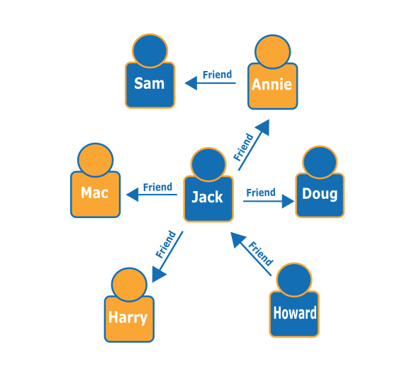

Графовые БД.
Графовые базы данных упрощают разработку и запуск приложений, работающих с наборами сложносвязанных данных. Типичные примеры использования графовых баз данных – социальные сети, сервисы рекомендаций, системы выявления мошенничества и графы знаний. Amazon Neptune – это полностью управляемый сервис графовых баз данных. Neptune поддерживает модель Property Graph и Resource Description Framework (RDF), предоставляя на выбор два графовых API: TinkerPop и RDF / SPARQL. К числу распространенных графовых БД относятся Neo4j и Giraph.
Что это такое?
Графовые базы данных предназначены для хранения взаимосвязей и навигации в них. Взаимосвязи в графовых базах данных являются объектами высшего порядка, в которых заключается основная ценность этих баз данных. В графовых базах данных используются узлы для хранения сущностей данных и ребра для хранения взаимосвязей между сущностями. Ребро всегда имеет начальный узел, конечный узел, тип и направление. Ребра могут описывать взаимосвязи типа «родитель‑потомок», действия, права владения и т. п. Ограничения на количество и тип взаимосвязей, которые может иметь узел, отсутствуют.
Обход графа в графовой базе данных можно выполнять либо по определенным типам ребер, либо по всему графу. Обход соединений или взаимосвязей в графовых базах данных выполняется очень быстро, поскольку взаимосвязи между узлами не вычисляются во время выполнения запроса, а хранятся в базе данных. Графовые базы данных имеют ряд преимуществ в таких примерах использования, как социальные сети, сервисы рекомендаций и системы выявления мошенничества, когда требуется создавать взаимосвязи между данными и быстро их запрашивать.
Ниже приведен пример графа социальной сети. Имея данные о людях (узлы) и взаимосвязях между ними (ребра), можно узнать, кто является «друзьями друзей» конкретного человека (например, пользователя по имени Howard).
Примеры использования
- Выявление мошенничества
Графовые базы данных позволяют выявлять сложные схемы мошенничества. Анализ взаимосвязей в графовых базах данных дает возможность обрабатывать финансовые операции и операции, связанные с покупками, практически в режиме реального времени. С помощью быстрых запросов к графу можно, например, определить, что потенциальный покупатель использует тот же адрес электронной почты и кредитную карту, которые уже использовались в известном случае мошенничества. Графовые базы данных также позволяют без труда обнаруживать определенные шаблоны взаимосвязей, например когда несколько человек связаны с одним персональным адресом электронной почты или когда несколько человек используют один IP‑адрес, но проживают по разным физическим адресам. - Сервисы рекомендаций
Графовые базы данных – хороший выбор для рекомендательных приложений. Используя графовую базу данных, можно хранить в графе взаимосвязи между такими информационными категориями, как интересы покупателя, его друзья и история его покупок. С помощью высокодоступной графовой базы данных можно рекомендовать пользователям товары на основании того, какие товары приобретали другие пользователи, которые интересуются тем же видом спорта и имеют аналогичную историю покупок. Или можно найти людей, у которых есть общий знакомый, но которые еще не знакомы друг с другом, и предложить им подружиться.
Amazon Neptune
В основе Amazon Neptune лежит специально созданное высокопроизводительное ядро графовой базы данных, оптимизированное для хранения миллиардов взаимосвязей и выполнения запросов к графу с задержками на уровне миллисекунд. Neptune поддерживает популярные модели графов Property Graph и Resource Description Framework (RDF) консорциума W3C, а также соответствующие языки запросов – Apache TinkerPop Gremlin и SPARQL, что позволяет просто создавать запросы для эффективной навигации по наборам сложносвязанных данных. В целях обеспечения высокой доступности в сервисе Neptune используются реплики чтения, возможность восстановления на момент времени, постоянное резервное копирование в Amazon S3 и репликация в разных зонах доступности. Сервис Neptune безопасен благодаря поддержке шифрования хранимых данных. Сервис Neptune полностью управляем, поэтому при работе с базами данных больше не требуется заниматься такими административными задачами, как выделение оборудования, установка исправлений ПО, установка и настройка самой базы данных, а также ее резервное копирование.